Practice Pack
Image-backed questions rendered from official IB PDFs. Work section by section; use the standard answers only after attempting.
Focus order: complex algebra → quadratic methods → factor theorem/polynomials → Vieta/root products. The long Paper 3 item is a stretch challenge, not a warm-up.
A. Complex number basics
2023 November TZ1 Paper 1 Question 7 [5 marks]
1.12
Complex equation z = 5 + qi; expand z² + iz and equate real/imaginary parts to find p and q.
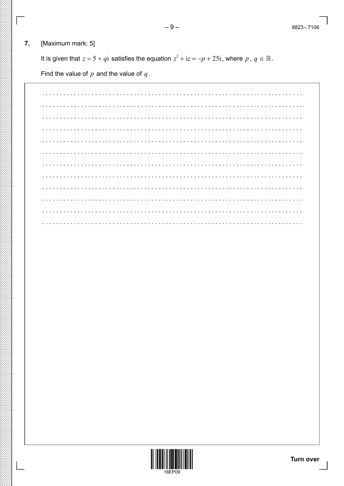
Open matching standard answer
2022 May TZ1 Paper 1 Question 9 [6 marks]
1.121.13
Multiply complex numbers and use an argument condition to solve for a parameter.
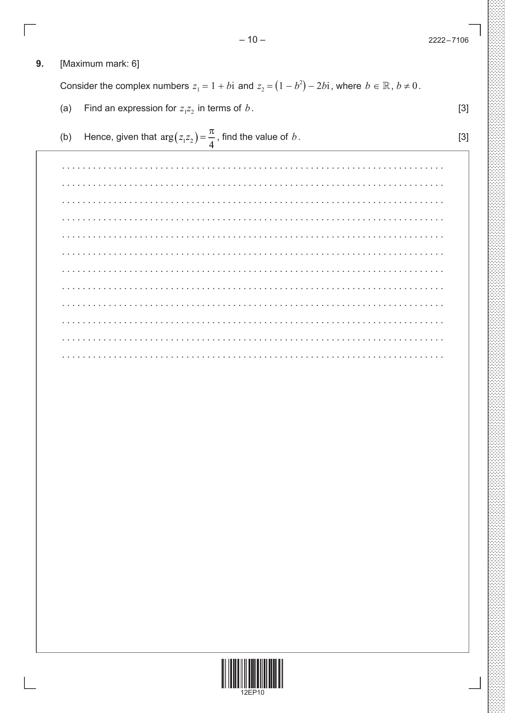
Open matching standard answer
2024 November Paper 2 Question 8 [6 marks]
1.121.13
Prove ww* = |w|², then solve linked complex equations in Cartesian form.
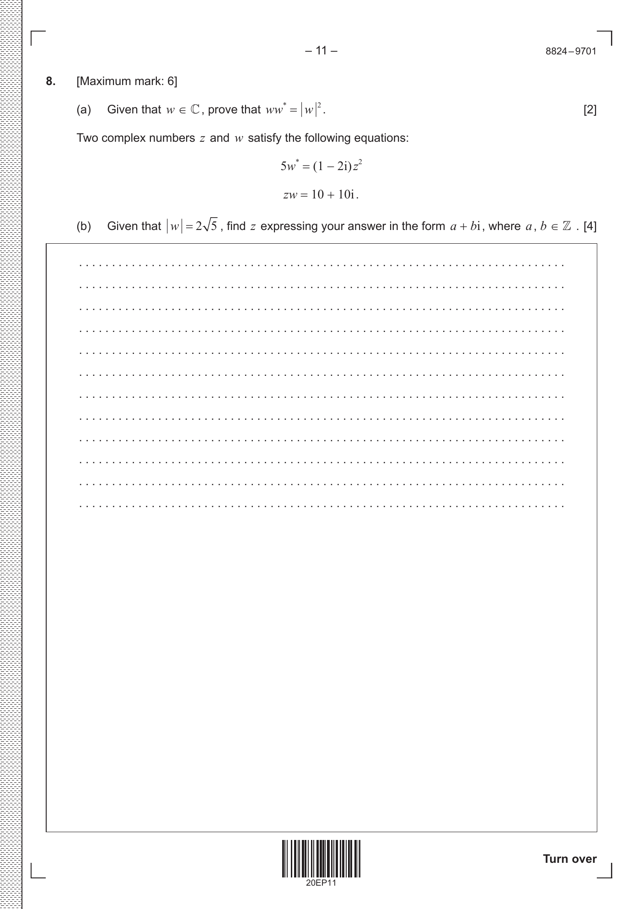
Open matching standard answer
B. Quadratic fluency
2024 November Paper 1 Question 6 [5 marks]
2.7
Solve a quadratic inequality and justify a domain restriction so an inverse exists.
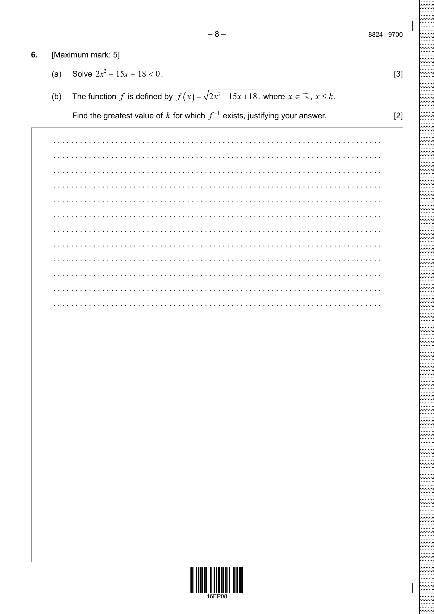
Open matching standard answer
2021 November Paper 1 Question 7 [7 marks]
2.7
Use discriminant conditions for two distinct real roots; then express roots in exact surd form.
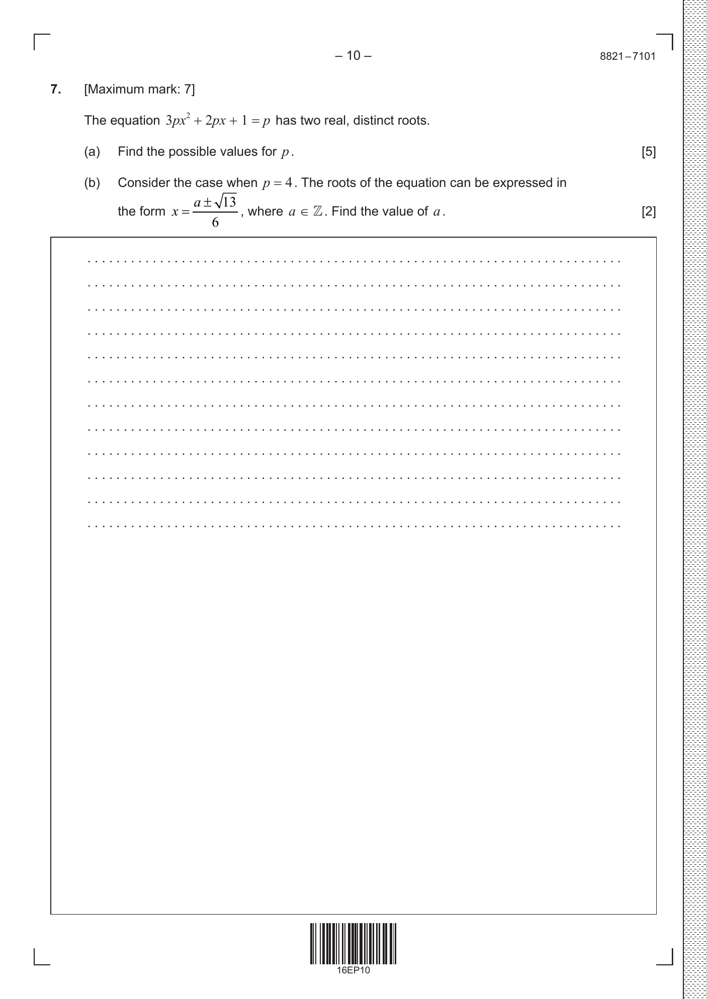
Open matching standard answer
2024 May TZ2 Paper 1 Question 2 [5 marks]
2.71.7
Solve an exponential equation by turning it into a quadratic in 3ˣ.
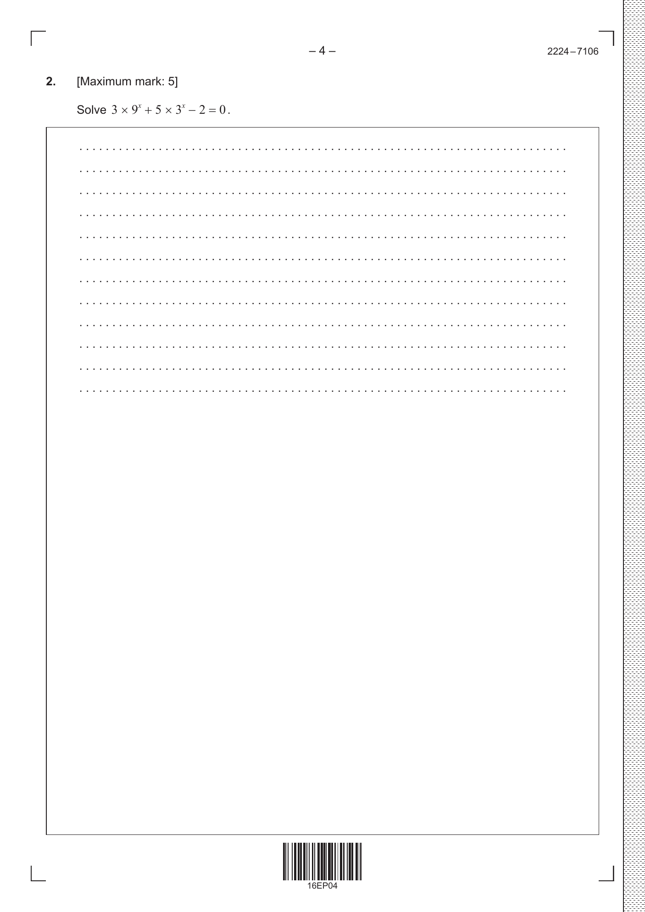
Open matching standard answer
2024 May TZ1 Paper 1 Question 10 [16 marks]
2.62.72.13
Quadratic form/features plus intersections with a rational function.
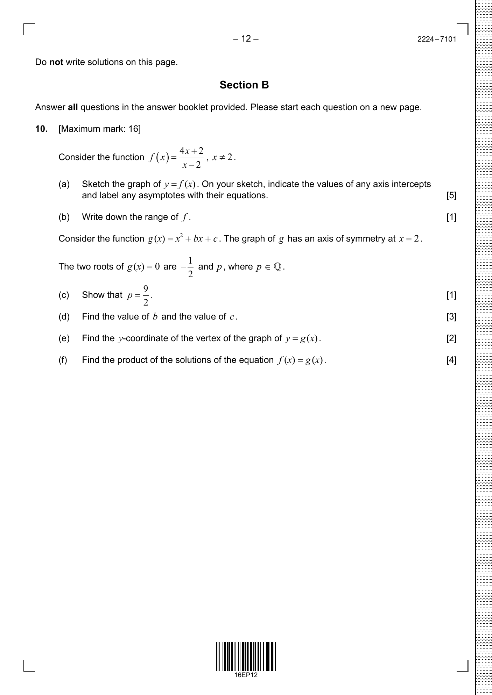
Open matching standard answer
C. Polynomial factors and roots
2023 May TZ1 Paper 1 Question 7 [6 marks]
2.121.14
Complex polynomial with a known factor; use conjugate roots/factor theorem to find all roots.
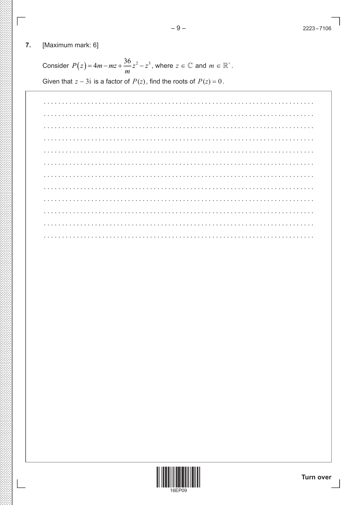
Open matching standard answer
2021 May TZ2 Paper 1 Question 7 [5 marks]
2.12
Cubic roots α, β, α+β; use relationships between coefficients and roots to find k.
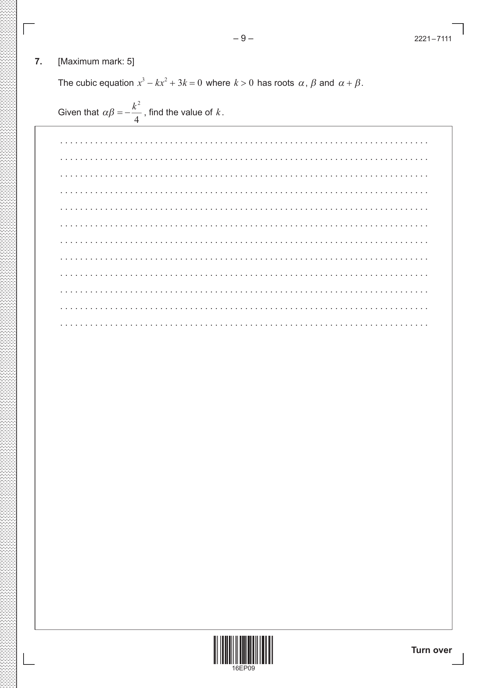
Open matching standard answer
2024 May TZ1 Paper 1 Question 11 [17 marks]
2.121.11
Use factor theorem on a cubic, then continue into partial fractions/integration. Do the polynomial/factor parts first.
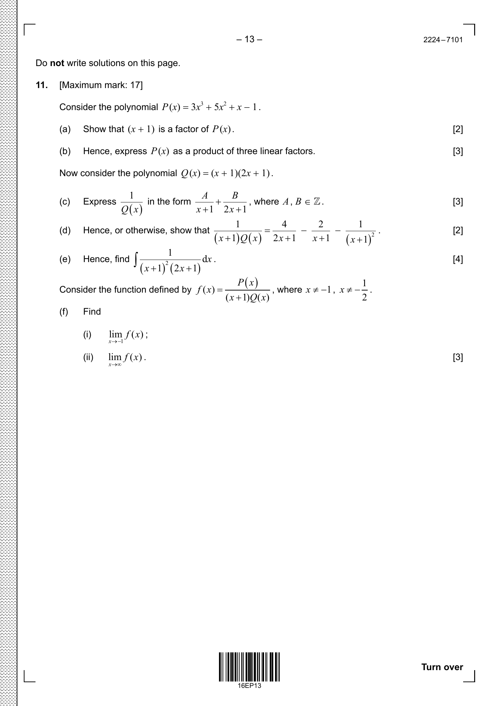
Open matching standard answer
D. Sum/product of roots and extension
2024 May TZ2 Paper 1 Question 7 [7 marks]
2.121.14
Cubic/quintic roots with complex conjugate pair; apply Vieta/product-of-roots ideas.
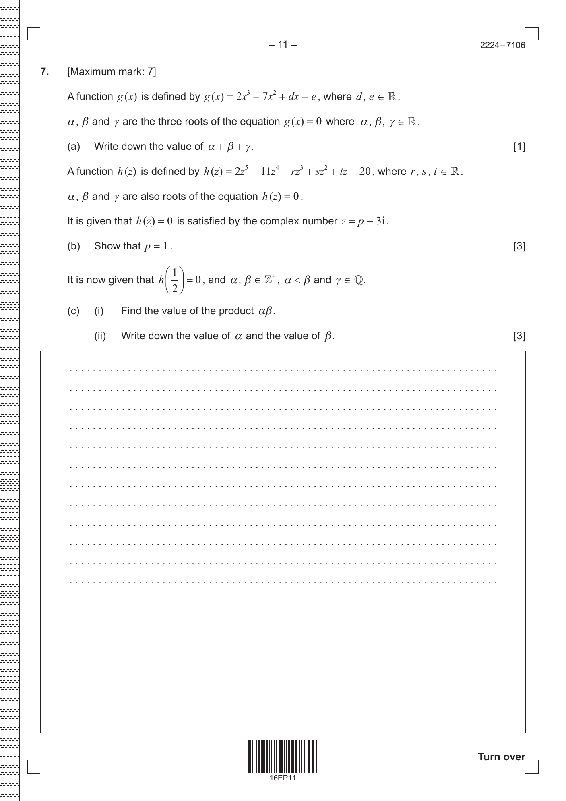
Open matching standard answer
2022 November Paper 1 Question 5 [7 marks]
2.121.14
Quartic with roots 3±i, a, a²; use product and coefficient relationships.
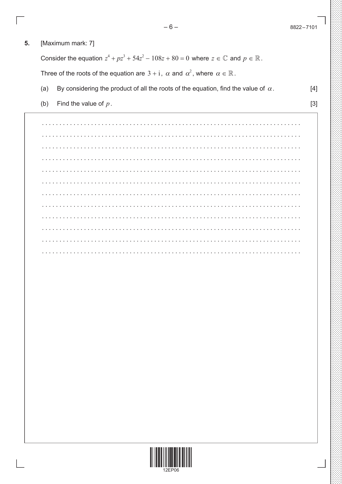
Open matching standard answer
2022 May TZ2 Paper 3 Question 2 [27 marks]
2.121.141.6
Challenge investigation: derive Vieta relations for cubics/quartics and reason about real vs complex roots.
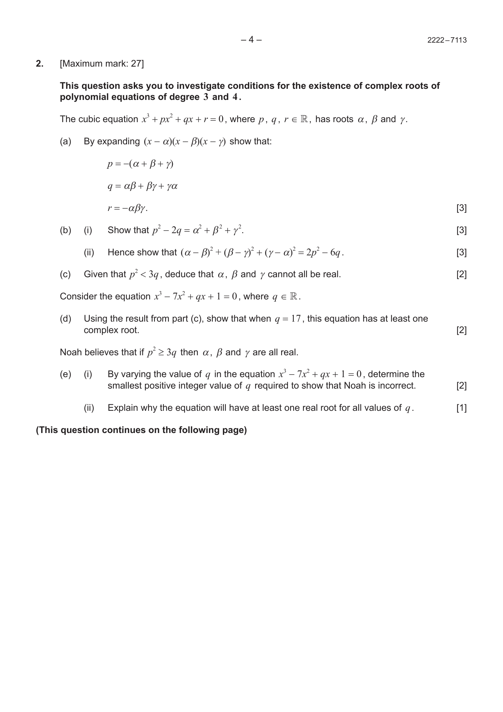
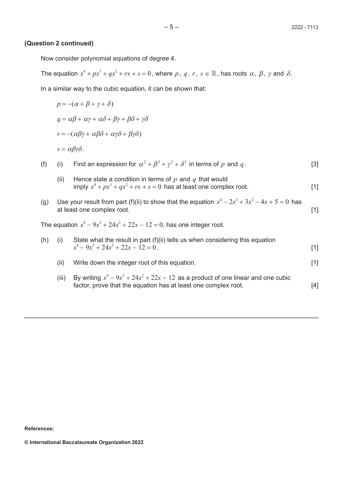
Open matching standard answer